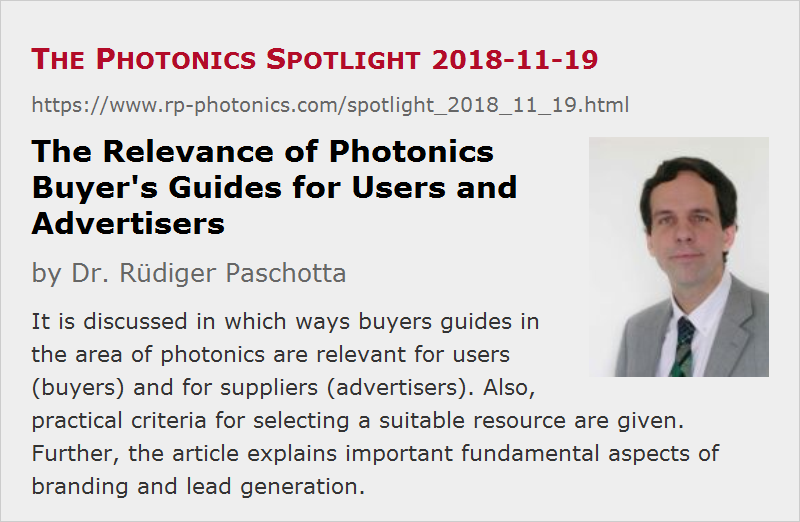

The Relevance of Photonics Buyer's Guides for Users and Advertisers
Posted on 2018-11-19 as a part of the Photonics Spotlight (available as e-mail newsletter!)
Permanent link: https://www.rp-photonics.com/spotlight_2018_11_19.html
Author: Dr. Rüdiger Paschotta, RP Photonics Consulting GmbH
Abstract: It is discussed in which ways buyers guides in the area of photonics are relevant for users (buyers) and for suppliers (advertisers). Also, practical criteria for selecting a suitable resource are given. Further, the article explains important fundamental aspects of branding and lead generation.

In the last two months, at RP Photonics we have heavily worked on further profound improvements of the RP Photonics Buyer's Guide. That also involved extensive discussions and thinking about various fundamental aspects – in particular, what exactly is the value of a good buyer's guide – both for users and for suppliers, who can use buyer's guides as advertisers. I am happy to share some of those thoughts, and you will see that the topic is well worth some thinking.
I well understand that most of the readers of this blog are technical people, who use buyer's guides for finding products but not for advertising. However, you may nevertheless be interested in the other perspective – partly because you could give valuable insight to your colleagues in the marketing department!
Finding Suppliers – Easier and Safer with a Good Buyer's Guide
If you are working towards a decision to purchase a certain photonics product, you should usually first carefully consider the required features. Thereafter, you need to find suitable suppliers. You may already have some in mind, for example from previous purchases, but obviously you want to make sure that you do not overlook some of the most important ones. How to do that efficiently?
In principle, you can just use a regular search engine like Google, but for that purpose they cannot serve you very well:
- If you search for a certain product (e.g. femtosecond lasers), the search results will contain many pages which are not at all related to devices which you can buy. For example, you find scientific articles, articles in trade journals, forum discussions etc., and you have to filter out all that stuff yourself.
- Even more importantly, you would probably not find all relevant suppliers that way. You may miss some, e.g. because their website has a low search engine ranking, and because too many other search results distract you.
- If you have identified a list of suppliers, you have to do the tedious work to check on their websites whether their product offerings are really suitable for your purpose.
A good buyer's guide makes it substantially easier for you:
- You can search for suppliers of a particular product and find exactly those – no pages with some relevance to the topic but no concrete products.
- As far as the buyer's guides can present product descriptions of the suppliers, you may more quickly find out which of their websites you should check.
What exactly is a good buyer's guide? There are several criteria:
- It should be convenient to use, e.g. with a clear page structure and navigation, quick server response etc.
- It should deliver data with high quality – for example, list only suppliers which really offer a certain product, rather than only having a certain keyword in their company description.
- Ideally, it also offers related scientific and technical information, helping you e.g. to work out your detailed requirements. For example, if you intend to purchase some laser goggles, you can profit from first reading an encyclopedia article on eye protection which makes you aware of the relevant qualities of those goggles. It would be frustrating to buy some and discover later on that you have overlooked an important selection criterion.
As a regular user of our encyclopedia, you know that we serve you very well with scientific and technical information, including various practical hints, and you will thus probably also prefer our buyer's guide which has similar qualities. Even if you just start with Google, you will often enough be reminded about our encyclopedia and buyer's guide and continue your search there.
Importance of Buyer's Guides for Suppliers
Obviously, the relevance of a buyer's guide for suppliers is based on its relevance for users: even the nicest looking resource is useless for suppliers if it is not heavily used. But how to find out which buyer's guides are the most popular ones? This is obviously important, unless you don't care to simply spend advertising money (and some of your time ) everywhere.
Evaluating Buyer's Guides
You have various options to clarify that:
- You may search for media data published on their websites. If clear traffic numbers are not available or are very hard to find, you should become rather skeptical. But even if you find them, can you believe them? In fact, I have found very misleading or even totally inflated data even on relatively prestigious websites. (For example, many do not tell you the traffic on their buyer's guide, but only on their website as a whole – even though that has little relevance.) Therefore, you definitely need to use other criteria.
- Fortunately, you can measure yourself what is most relevant: the amount of referral traffic which a certain website brings to your own one. That you can get from your server statistics – if necessary, with a little help from some IT person in your company. It is only that this may work only after engaging as an advertiser, but why not try the good looking places for some limited time and then decide on the prolongation of your entries based on the obtained statistical data? If you are responsible for the product marketing, such kind of work is your job!
- Try to look at such resources with the perspective of a user: would you use a certain website for finding suppliers? If it is inconvenient, has a cluttered page design, a painfully slow server response and/or presents competitors which you know not to be suppliers for a certain product, the users will probably also not like it. You may also ask technical people in your company about their opinion.
- In principle, you can also look where others advertise, but I warn you not to rely on others to be more diligent: in fact, many continuously waste advertising money on resources which do not deliver any real value, because they never checked the results.
What Exactly Is the Value?
I already mentioned the important criteria of referral traffic. If a good buyer's guide can send a lot of professionals to your website, the chances are that some of them will end up purchasing your products. Therefore, advertisements in such resources can be considered as effective means for lead generation.
However, do not forget that lead generation is not everything. You also want your company to be well known as a supplier – you want to build up a brand, consisting of your company name, the company logo and a certain image, including aspects like being well known, considered as serious and reliable, offering products of certain types etc. For that purpose, it is important to repeatedly show up on various channels, particularly where photonics professionals spend substantial time – and most importantly when they are searching for products. Even though your company will often not win the competition, it is essential to be repeatedly seen, so that your company is recognized as a relevant part of this world.
Some companies offering very special products cannot rely on general advertisements only, but must personally approach certain people and companies whom they have identified as potential buyers. That can be an absolutely reasonable approach, but don't make the mistake to believe that branding is then not relevant for you.
For example, imagine that you have a young startup company and hope to convince some people that they should try using your lasers for their particular application. This is clearly not easy – as a new supplier in the field, you will be seen with skeptical eyes. It is particularly difficult if they have not seen you at other places. If you have no reasonable presence in the most relevant buyer's guide, the risk is high that you are not recognized as a serious supplier. Keep in mind that you do not only have to convince people of the qualities of your new product; you also need to be seen as a company which has the courage and power to seriously enter the market.
Of course, small companies and particularly startups do not have the resources to engage everywhere. However, they need to at least create and maintain a good presence at the most important places. That is not just nice to have if you have some left-over resources, but essential for your survival. If you really cannot afford e.g. a couple of thousand USD per year for advanced entries in the best buyer's guide, you should probably think about closing down the company due to a lack of chances.
Another example is a company in a later stage which may be acquired by some big company. Again, what matters in the negotiations is not only hard data e.g. concerning your turnover, but also the visibility of your brand. If you inappropriately save some money in brand building, you may later lose a big multiple of that.
By the way, print advertisements essentially support your branding, while normally not being particularly effective for lead generation. They can still be very valuable without having a directly measurable effect. It is just not so easy to judge their value and to use them effectively.
Further Reading
Note that I have recently published several articles on photonics marketing. In particular, there is one on buyer's guides which contains additional interesting thoughts on that topic. However, you also find a lot of thoughts on various other tools for photonics marketing, including some which we do not offer ourselves.
This article is a posting of the Photonics Spotlight, authored by Dr. Rüdiger Paschotta. You may link to this page and cite it, because its location is permanent. See also the RP Photonics Encyclopedia.
Note that you can also receive the articles in the form of a newsletter or with an RSS feed.
Questions and Comments from Users
Here you can submit questions and comments. As far as they get accepted by the author, they will appear above this paragraph together with the author’s answer. The author will decide on acceptance based on certain criteria. Essentially, the issue must be of sufficiently broad interest.
Please do not enter personal data here; we would otherwise delete it soon. (See also our privacy declaration.) If you wish to receive personal feedback or consultancy from the author, please contact him e.g. via e-mail.
By submitting the information, you give your consent to the potential publication of your inputs on our website according to our rules. (If you later retract your consent, we will delete those inputs.) As your inputs are first reviewed by the author, they may be published with some delay.
|  |
If you like this page, please share the link with your friends and colleagues, e.g. via social media:
These sharing buttons are implemented in a privacy-friendly way!